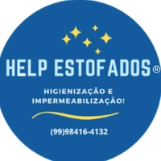
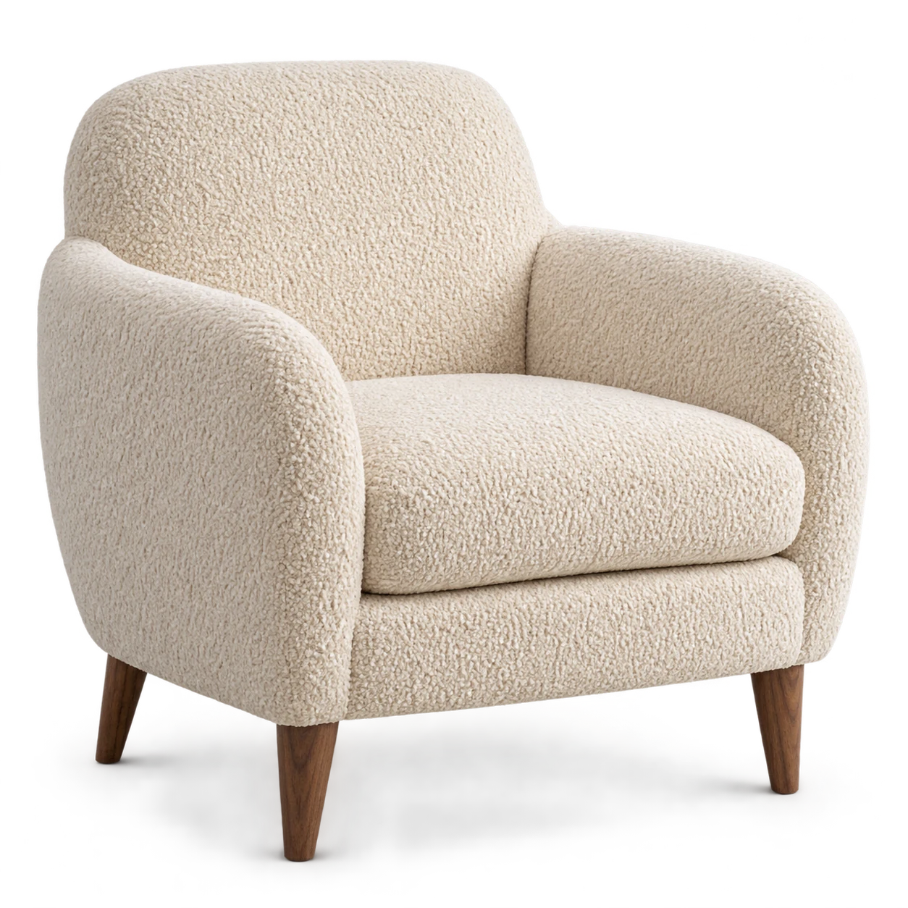

Mostrar o serviço
com personalidade.
Azul e amarelo da Help, uma direção de arte sobre tecido e cuidado e uma navegação que apresenta a empresa sem parecer um catálogo de móveis.

helpESTOFADOSEntrar na experiência ↗Uma ideia independente, preparada para a Help Estofados
Uma nova forma de apresentar a Help em Caxias e transformar o interesse em um pedido mais claro.
Explorar a prévia ↗
Direção de arte conceitual · Não é o site oficial da Help.
Encontrei a Help pesquisando empresas de higienização. Vocês já apresentam serviços para casa, interiores de carros e impermeabilização. A ideia é dar a essa variedade uma experiência própria, com a identidade de vocês.
Em vez de começar com um “quanto custa?”, a pessoa pode escolher o serviço, informar a peça, a quantidade e o bairro. Quando inicia a conversa, vocês já têm um ponto de partida.
Essa é uma oportunidade a conversar com vocês. Não tenho acesso às mensagens, aos resultados dos anúncios ou à rotina da empresa e não estou presumindo perda de vendas.
Abra, role e teste o pedido. Funciona no celular e no computador.
Abrir em tela inteira ↗A experiência chama atenção para o cuidado. O caminho até o pedido permanece simples.
Azul e amarelo da Help, uma direção de arte sobre tecido e cuidado e uma navegação que apresenta a empresa sem parecer um catálogo de móveis.
Casa, carro e proteção têm caminhos distintos. A pessoa encontra o que precisa e chega ao pedido com o serviço selecionado.
Um resumo reúne serviço, peça, quantidade e local. No site aprovado, a pessoa revisa e envia pelo WhatsApp. A Help continua avaliando e definindo os valores.
O que eu entrego
Valor total do pacote. Não é mensalidade.
Estou abrindo espaço para um primeiro caso nesse formato. Por isso, preparei esta condição inicial para um escopo bem definido, com acompanhamento técnico e uma entrega que vocês podem testar antes de decidir.
Domínio próprio, novos conteúdos, alterações posteriores ao escopo e novas funcionalidades são cobrados separadamente. Correções técnicas cobrem falhas do que foi entregue, não atendimento ilimitado ou mudanças contínuas. Sem renovação automática. A continuidade após os 12 meses é combinada novamente antes do encerramento.
Se o projeto fizer sentido e vocês gostarem do resultado, gostaria de pedir um depoimento honesto depois da entrega. Ele não é condição para contratar.
Quero conversar sobre a ideia ↗Vocês não precisam decidir só pela apresentação. Testem a prévia e me contem o que se aproxima da rotina de vocês e o que precisa mudar.
Testar a experiência ↗Sou Higor Selvino, designer gráfico formado e ilustrador. Meu projeto Beyond the Sky recebeu Anhembi Awards em Ilustração e História em Quadrinhos. Conheça meu portfólio ↗